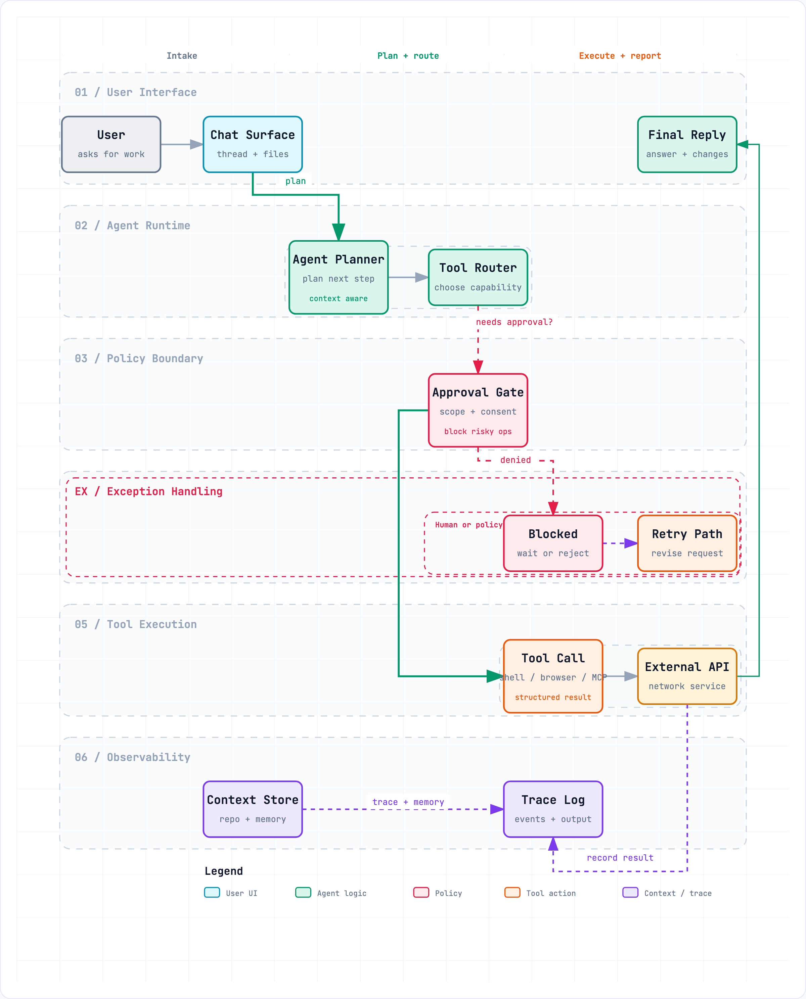
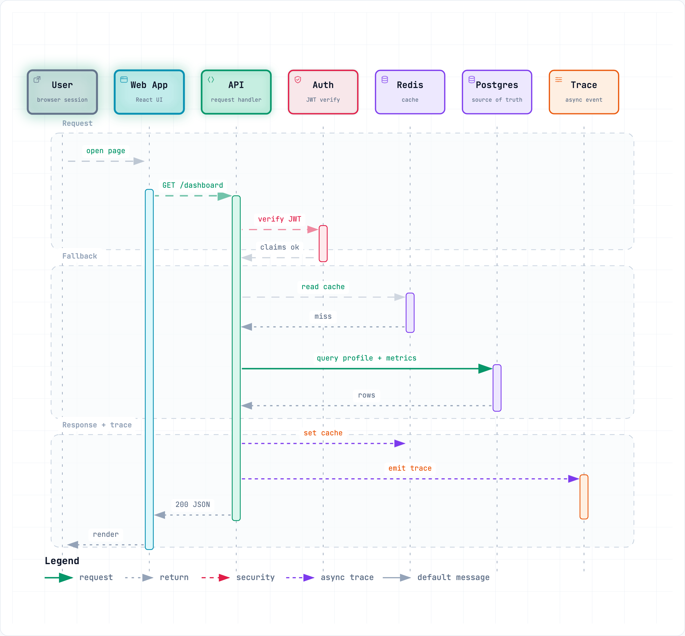
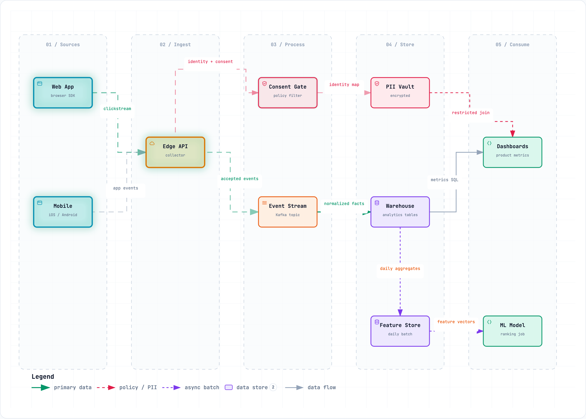
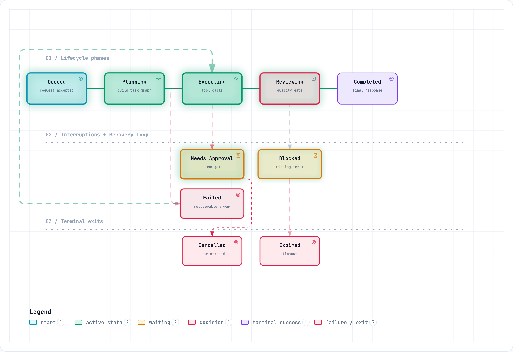

Five ways to see your system.
Architecture, workflows, sequences, data flows, or state machines — describe what you need and Archify picks the right visual language.
Architecture
System components, cloud resources, databases, caches, services, security groups, and the connections between them.
- AWS / GCP / Azure infra
- Microservices topology
- Security boundaries
- Network layout

Workflow
Swim-lane processes with semantic nodes and anchored edges — approval gates, async branches, and observability paths, lane by lane.
- CI/CD pipelines
- Incident runbooks
- Agent tool-call flows
- Approval & async paths

Sequence
API call chains, request lifecycles, cache fallback paths, auth checks, async traces — who calls whom, in what order, and what returns.
- API request / response
- Cache miss fallback
- Auth & JWT flow
- Async trace emit

Data Flow
Data pipelines, ETL/ELT, analytics events, PII isolation, warehouse sync, lineage, and downstream consumers — with governance boundaries.
- Analytics pipelines
- PII & consent gates
- Warehouse lineage
- ML feature stores

Lifecycle
State machines, object lifecycles, run/order/deployment status transitions — with wait states, retries, cancellation, and terminal outcomes.
- Agent run lifecycle
- Order status machine
- Deployment pipeline
- Approval & retry paths
